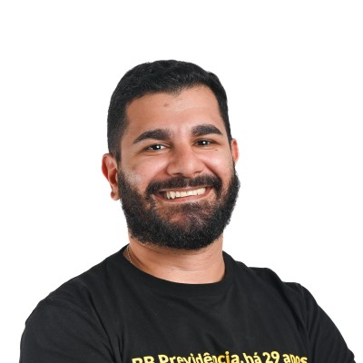

Transformando processos contábeis e financeiros através de dados e programação.
O Problema: Carga manual e repetitiva de dezenas de documentos no portal da empresa.
A Solução: Desenvolvi um script que lê os dados de uma planilha Excel, automatiza o login e faz o upload em lote. Contornei a ausência de IDs fixos no portal utilizando XPath e injeções de JavaScript.
O Reconhecimento: O projeto de automação acima venceu em 1º lugar o concurso de inovação da BB Previdência, disputando com diversas iniciativas.
Prêmio: 150 mil pontos Livelo e viagem até uma patrocinadora.
O Problema: Apresentações geradas manualmente copiando e colando dados de planilhas pesadas.
A Solução: Centralização em um painel interativo. Utilizei DAX e integrei scripts em R e Python para gerar visuais customizados, ganhando agilidade e padronização.
Acompanhamento de investimentos, geração de relatórios e criação de dashboards em Power BI. Vencedor do concurso de RPA.
Automações em VBA, controle de Ativo Imobilizado, apuração de tributos e envio de obrigações acessórias (REINF/DCTF-Web).
Otimização de processos SAP, ferramentas automatizadas em Excel para IVA, liderança na implementação de portal web.
Implantação de SPED e EFD-REINF, planejamento tributário estratégico com tese de equiparação hospitalar e conciliação fiscal.
Seja para discutir um desafio de automação, oportunidades em finanças e contabilidade ou apenas para trocar ideias, sinta-se à vontade para entrar em contato comigo!